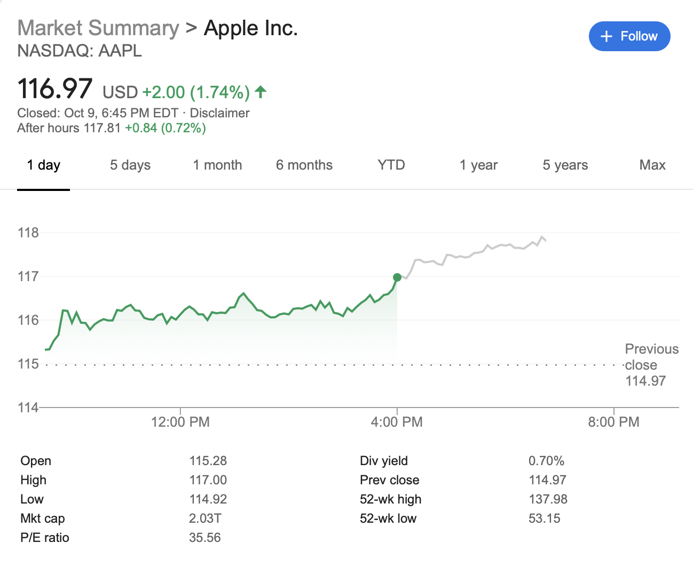
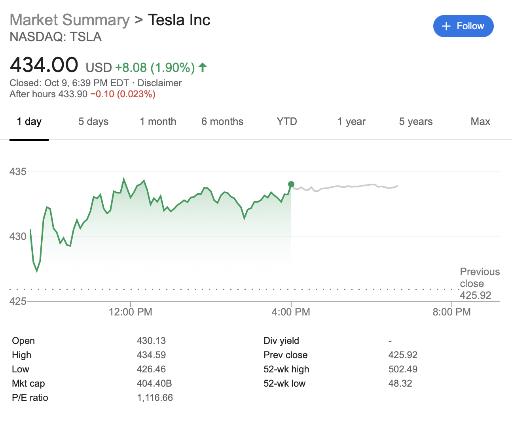
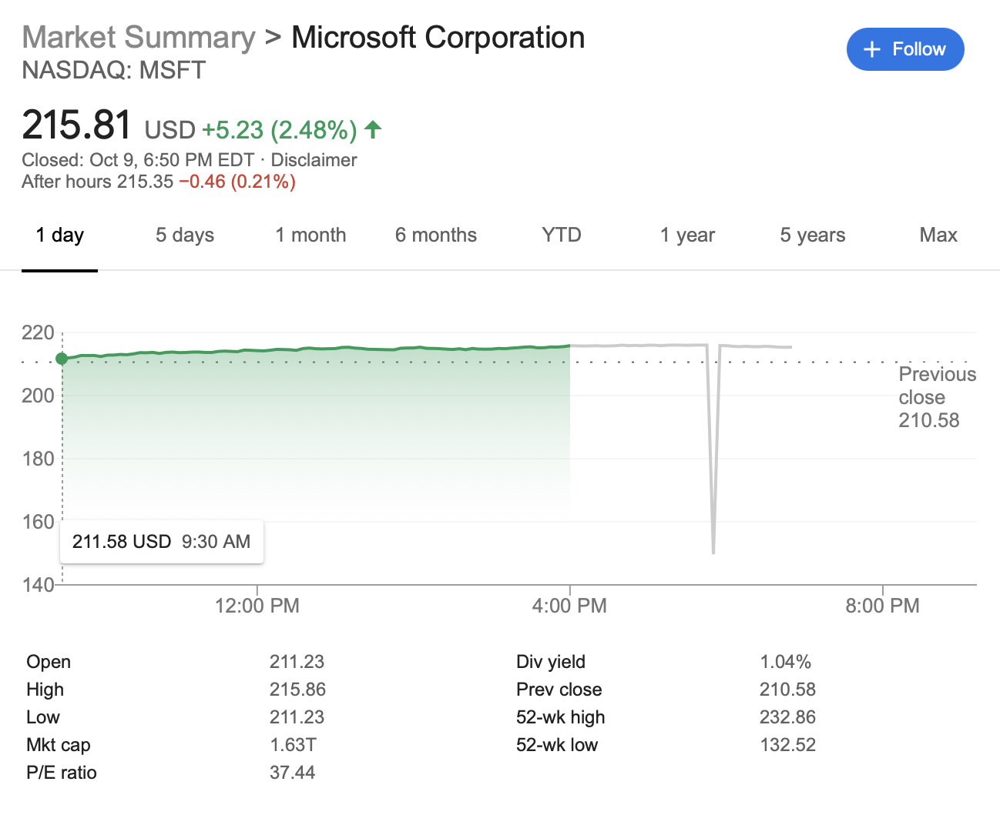

Trend Following App
Get notified when to buy/sell based on market trends
Our Picks
-

AAPL
Apple Inc. designs, manufactures, and markets smartphones, personal computers, tablets, wearables, and accessories worldwide. It also sells various related services. The company offers iPhone, a line of smartphones; Mac, a line of personal computers; iPad, a line of multi-purpose tablets; and wearables, home, and accessories comprising AirPods, Apple TV, Apple Watch, Beats products, HomePod, iPod touch, and other Apple-branded and third-party accessories.
-

TSLA
Tesla, Inc. designs, develops, manufactures, leases, and sells electric vehicles, and energy generation and storage systems in the United States, China, Netherlands, Norway, and internationally. The company operates in two segments, Automotive; and Energy Generation and Storage. The Automotive segment offers sedans and sport utility vehicles. It also provides electric powertrain components and systems; and services for electric vehicles.
-

MSFT
Microsoft Corporation develops, licenses, and supports software, services, devices, and solutions worldwide. Its Productivity and Business Processes segment offers Office, Exchange, SharePoint, Microsoft Teams, Office 365 Security and Compliance, and Skype for Business, as well as related Client Access Licenses (CAL); Skype, Outlook.com, and OneDrive; LinkedIn that includes Talent, Learning, Sales, and Marketing solutions, as well as premium subscriptions.
Trend Following
Trend following is an investment or trading strategy which tries to take advantage of long, medium or short-term moves that seem to play out in various markets. Traders who employ a trend following strategy do not aim to forecast or predict specific price levels; they simply jump on the trend (when they perceived that a trend has established with their own peculiar reasons or rules) and ride it. These traders normally enter in the market after the trend "properly" establishes itself, betting that the trend will persist for a long time, and for this reason they forego the initial turning point profit. A market "trend" is a tendency of a financial market price to move in a particular direction over time. If there is a turn contrary to the trend, they exit and wait until the turn establishes itself as a trend in the opposite direction. In case their rules signal an exit, the traders exit but re-enter when the trend re-establishes.
AirBnB
Home rental company Airbnb is aiming to raise around $3 billion in its upcoming initial public offering, people familiar with the matter said on Friday,
taking advantage of the unexpectedly sharp recovery in its business after the COVID-19 pandemic roiled the travel industry. Airbnb will be one of the
largest and most anticipated U.S. stock market listings of 2020 which has already been a blockbuster year for IPOs.
The company’s current plan is to make its filing publicly available in November after the U.S presidential election and is targeting an IPO some time in
December, the sources said, requesting anonymity as the plans are private.